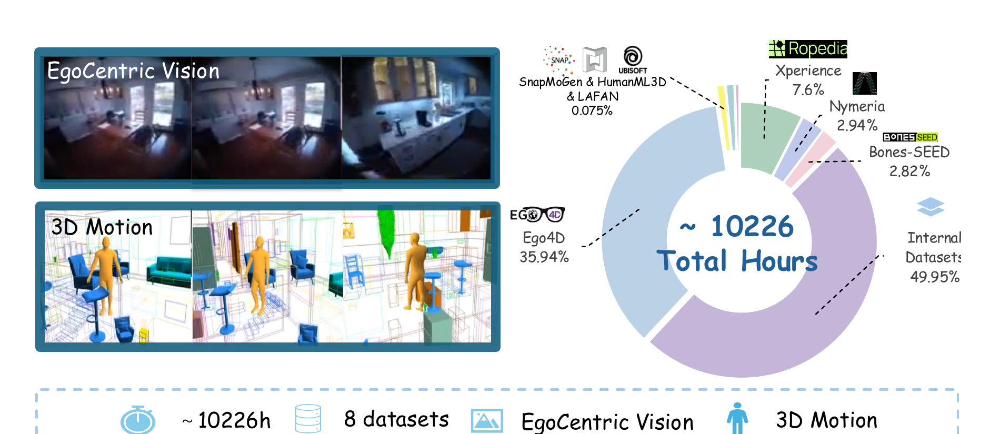
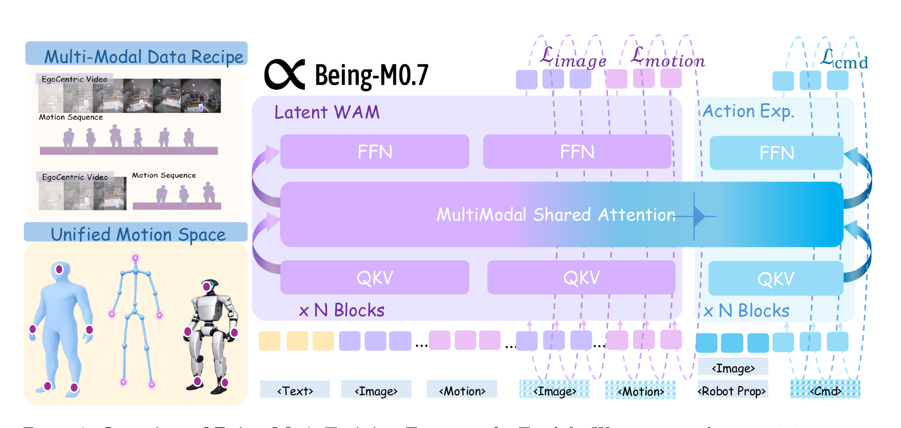
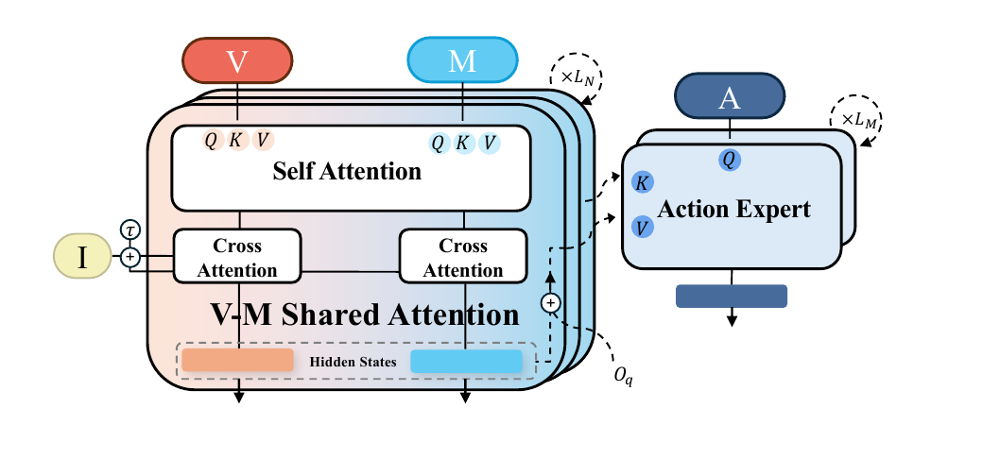
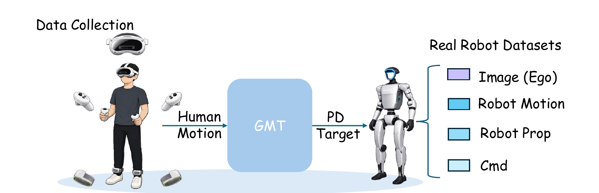
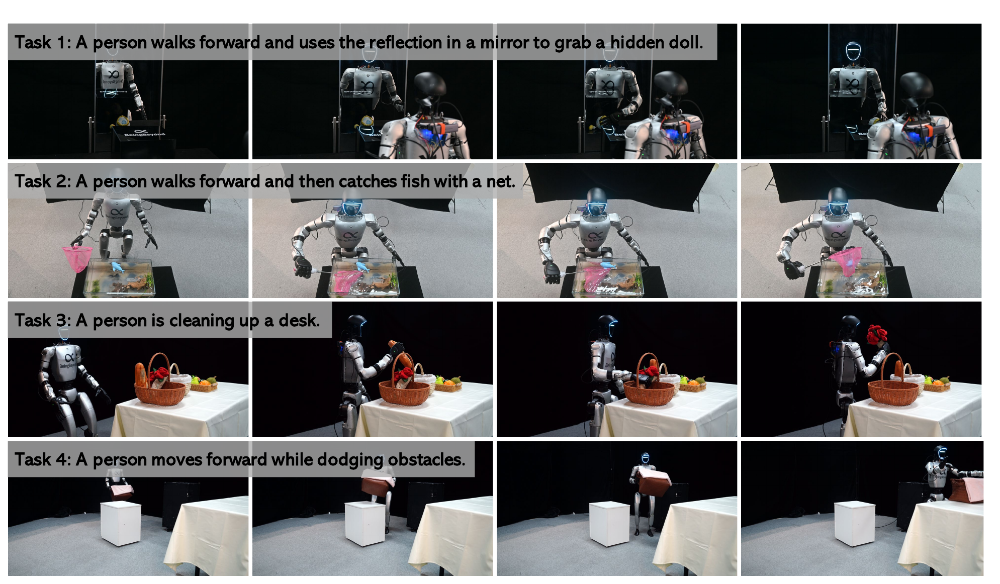

总览：不学"未来长什么样"，只学"未来会怎么变"
人形机器人做 loco-manipulation（边走边操作）时，要同时决定往哪走、身体怎么摆、手脚怎么协调、姿态怎么稳——这是个天生"时序 + 全身"的问题：好策略不能只看当前画面，还得推理未来场景会怎么变、身体会怎么动、任务进展到哪。但两条老路都卡住：真机演示数据太贵（人形遥操作比固定臂难得多），像素级未来预测又太烧算力（大量容量花在渲染画面细节上，而这些细节和控制几乎无关，还被自我运动的抖动污染）。Being-M0.7 的答案：造一个隐空间世界-动作模型（latent WAM）——不预测未来像素，而是预测未来的视觉隐状态（用 DINO 编码）+ 未来运动，在一个人和人形机器人共享的紧凑全身运动表示里建模。先在万小时人本视频+动作上学好这个"世界怎么演化"的先验，再用少量真机数据接一个轻量动作专家，把先验落地成可执行的全身指令。
论文五问速答
| ① 背景：问题为什么难 | 人形 loco-manipulation 是时序 + 全身问题：要联合决定移动/朝向/手脚协调/姿态维持，好策略必须推理未来场景演化、身体运动和任务进展，而不只是当前观测（§1, p.2）。 |
| ② 站在什么工作上 | 视觉编码 = DINO（隐状态而非像素）；生成 = flow matching（Lipman）；骨干 = Mixture-of-Transformers（MoT）；动作专家 = future-conditioned DT 思路 + action chunking（ACT）；语言 = 冻结 DistilBERT；底层控制器 = SONIC（通用全身运动追踪）；数据接续团队自家的 Being-H0.5 / Being-M0.5。 |
| ③ 前人卡在哪 | 三个具体缺陷（§1, p.2）：(a) 依赖昂贵真机数据——人形演示要同步 ego 视频+本体感知+可执行全身指令，遥操作难、安全和硬件受限；(b) 像素级未来预测昂贵且噪——容量花在与控制弱相关的外观细节上，人形任务里预测视觉轨迹还被快速自我运动/视角变化/身体引起的相机抖动污染；(c) 上下半身分离——多数流水线只强调上身操作或单独 locomotion，导致上下身协调弱，不适合自然全身控制。 |
| ④ 他们的 insight | 别人要么"预测像素级未来"（贵且噪），要么"把人类视频当演示去模仿"（要重定向）；Being-M0.7 说：把人本视觉经验当作"关于未来场景和运动演化的预测性结构"，在隐空间学。三招对应三缺陷——(a) 用可扩展人本数据（ego 视频 + 视频-动作对 + 动作序列）替代昂贵遥操作；(b) 联合预测未来视觉隐状态 + 运动而非像素，把容量集中到控制相关的场景/运动动态；(c) 用人和人形共享的统一运动表示桥接形态鸿沟，让 locomotion 和 manipulation 在同一个表示里协调。 |
| ⑤ 最后效果 | 真机 Unitree G1、4 个挑战性全身任务。Table 1（水缸捞鱼 + 镜像取玩具）：Being-M0.7 总成功率 7/15，高于 Ψ₀（3/15）和 GR00T-N1.6（2/15）。定性上在状态预测、运动生成、locomotion、灵巧操作四类能力上都展示了协调的闭环全身控制。定位：据作者所知第一个用于人形控制的 latent world-action 模型。 |
数据集：三流语料 + 一份真机后训练数据
| 数据流 | 规模 | 是什么 / 监督什么 | 喂给哪个阶段 |
|---|---|---|---|
| D_VM · 视频-动作对 | （占比见 Fig.3） | 成对的第一视角视频 + 3D 动作——监督视觉与运动的联合分布（未来场景怎么变 ↔ 身体怎么动）。来源含 Nymeria、Ego-Exo4D、EgoVid-5M 等 | 阶段 1 · 先验预训练（主监督） |
| D_V · 纯视频 | Ego4D 35.94% | 只有第一视角视频——约束视觉边缘分布，提供视觉上下文和场景演化。Ego4D 是最大单一来源 | 阶段 1（只算视觉 loss） |
| D_M · 纯动作 | AMASS / HumanML3D / MotionX / SnapMoGen 等 | 只有 3D 人体动作序列——约束运动边缘分布，即使没有视觉也教全身运动学与动力学结构 | 阶段 1（只算运动 loss + 几何正则） |
| 三流合计 ~10,226 小时（Fig.3；Internal 49.95% + Ego4D 35.94% + Xperience 7.6% + Nymeria 2.94% + Bones-SEED 2.82% + ...），8 个数据集 | |||
| 真机后训练数据 | 4 任务各若干条 | VR 全身遥操作采的 Unitree G1 轨迹：ego 图像 + 机器人运动 + 本体感知 + 指令（含手部开合 + SONIC 运动 token）。50Hz | 阶段 2 · 动作专家后训练 |
展开原文 · 为什么叫 "latent" world-action model
"the model performs visual-latent-level generation rather than pixel-level video generation. This ... biases the visual objective toward semantic state, object layout, and scene evolution instead of low-level pixel reconstruction, which is the reason we refer to our model as a latent world-action model."
像素级世界模型像一个"必须在脑中渲染出未来每一帧高清画面"的棋手——大量脑力花在想象木纹和光影上，可这些对决策毫无用处，还容易被镜头晃动带偏。Being-M0.7 是"只在脑中推演局势走向（谁威胁谁、子力怎么流动）"的棋手——它预测的是语义级的场景状态和身体运动趋势（DINO 隐空间 + 紧凑运动向量），把算力全押在与"下一步该怎么动"直接相关的信息上。
问题拆解：一个"慢先验" + 一个"快动作专家"
§01 说要"先学世界演化先验、再落地成动作"，这一节把它写成公式，回答模型到底建模什么概率、为什么拆成两块。核心是一个分解：先验世界-动作模型负责"未来场景 + 粗粒度运动计划"（低频、跨窗口复用），future-conditioned 动作专家负责"把粗计划细化成本体可执行指令"（高频、闭环）。这个"慢想 + 快做"的分层，正是让一次昂贵的世界推理能驱动多次低延迟控制更新的关键。
把时间窗切成上下文区间 $\mathcal{C}=\{1,\dots,K\}$（已观测）和未来区间 $\mathcal{Q}=\{K{+}1,\dots,T\}$（要预测）。$Z=\mathcal{E}(V)$ 是 ego 视频的视觉隐状态，$M$ 是紧凑全身运动序列，$I$ 是任务指令。先验世界-动作模型建模：
- $Z_\mathcal{Q}$
- 未来的视觉隐状态——"场景会怎么演化"（DINO 空间，不是像素）
- $M_\mathcal{Q}$
- 未来的粗粒度运动计划——"身体大致该怎么动"。注意 M 是运动级动作计划，描述全身怎么动，但不指定本体特定的可执行指令
- $Z_\mathcal{C}, M_\mathcal{C}, I$
- 条件：已观测的视觉、运动历史 + 任务指令
但粗运动计划 $M$ 不能直接驱动电机。引入 future-conditioned 动作专家：在动作查询时刻 $q$，给定机器人观测 $O_q$，把预测的未来上下文细化成可执行指令 $\mathbf{a}_q$：
- 右边第二项（先验 WAM）
- 低频的"世界建模"：从历史推未来场景+粗运动。一次推理产出的表示可跨多个控制窗口复用
- 右边第一项（动作专家）
- 高频的"动作生成"：以未来上下文 $(Z_\mathcal{Q}, M_\mathcal{Q})$ 和当前机器人观测 $O_q$ 为条件，出可执行动作 $\mathbf{a}_q$
- $\approx$ 分解的意义
- 把低频世界建模与高频动作生成解耦——世界表示复用，动作以低延迟刷新。这是"慢想快做"能成立的数学依据
这个"先验（慢）× 动作专家（快）"分解，和我们读过的几篇是同一家族的不同选择：Ψ₀ 是"冻结 VLM（慢）+ MM-DiT expert（快）"，MotionWAM 是"ego 视频生成模型的去噪特征 condition 一个运动模型"。Being-M0.7 的独特点是：慢的那一半本身就是一个会预测未来的世界模型（预测 $Z_\mathcal{Q}, M_\mathcal{Q}$），而不只是一个感知编码器——所以它叫 world-action model，不只是 vision-language backbone。
数据：万小时三流语料 + 一个"人机通用"的身体
§02 的先验要从数据里学，但人形真机数据太贵——这一节讲 Being-M0.7 怎么绕开。两个支柱：① 三流混合语料：把"视频-动作对 / 纯视频 / 纯动作"三种数据拼成一口锅（>1 万小时），让机器人无关的便宜数据也能贡献"视觉上下文"和"运动学结构"；② 统一运动表示：把人和人形机器人的动作都压进头-根坐标系下、只保留头+两手+两脚的紧凑表示，跨越人机形态鸿沟。读完你会明白：为什么纯动作数据（没有任何视觉）也能帮机器人学控制。

三流的数学写法很干脆——过滤后的预训练集 $\mathcal{D} = \mathcal{D}_{VM} \cup \mathcal{D}_V \cup \mathcal{D}_M$：$\mathcal{D}_{VM}$ 监督视觉与运动的联合分布，$\mathcal{D}_V$ 和 $\mathcal{D}_M$ 分别约束视觉、运动的边缘分布。这样"机器人无关"的海量便宜数据也能给下游控制注入视觉上下文 + 运动学结构，把可用监督从千小时级的成对数据扩到万小时级。
统一运动表示：头-根坐标 + 五点身体
展开原文 · 统一运动表示的作用
"Because the same representation can be constructed from both human motion and humanoid robot trajectories, it bridges the morphology gap between humans and robots ... it provides richer supervision than executable command labels alone, and during inference it exposes additional motion-level feedback about robot kinematics."
架构：视频与运动"混合专家"，共享一层注意力
§03 备好了三流数据，但一个模型怎么同时吃"视频-动作对 / 纯视频 / 纯动作"三种输入？答案是 MoT（Mixture-of-Transformers）：视觉 token 和运动 token 各有自己的 LayerNorm / QKV / FFN（模态专属计算），但在每个 block 里共享一层多模态注意力——让每个视觉 token 能跨时间和运动 token 交换信息。哪种模态缺席，就只对在场的模态算 loss。这一节还要看清那个"单向连接"：动作专家只读先验的隐状态，不把动作信息回灌先验——保证先验的世界建模不被下游控制带偏。

第 1 步：按模态嵌入
视觉隐状态 z_t 和紧凑运动向量 m_t 各用独立的输入投影，映到 MoT 隐维。时序位置编码标注对齐的时间索引，模态类型编码区分视觉/运动。指令 I 用冻结 DistilBERT 编码成语言条件。
第 2 步：模态专属 QKV
视觉 token 和运动 token 各过自己的 LayerNorm 和 QKV 投影——参数不共享，每种模态保留独立计算路径。
第 3 步：共享注意力融合
两路投影出的 Q/K/V 合并进一个共享注意力：每个视觉 token 跨时间与运动 token 交换信息，同时两流都 cross-attend 到指令。前 K 帧是干净上下文，未来帧被加噪，用 chunk 注意力掩码——上下文只看历史，未来 token 互相都能看（non-causal），从而并行去噪整段未来 chunk。
第 4 步：模态专属 FFN + τ 调制
回到各自的 FFN。flow 时间步 τ 的正弦嵌入通过 modality-specific AdaLN 调制每条流。堆叠 ×N blocks（先验 30 层）。模态专属的输出投影分别产出视觉隐空间和连续运动空间的速度场。
第 5 步：动作专家读出（后训练才接）
动作专家（6 层）在每层 cross-attend 到先验对应层的隐状态 H^θ(τ) + 当前机器人观测 O_q，把粗运动计划细化成可执行指令。单向连接：只读先验，不回灌。

MoT 的模态专属分支是"三流语料能一锅烩"的技术前提：视频-动作对激活全部路径，纯视频只走视觉路径+算 L_image，纯动作只走运动路径+算 L_motion。正因为每种模态有独立参数，缺席的模态不会污染在场模态的学习——这把可用监督从千小时成对数据扩到万小时混合语料，同时保留跨模态交互（当两种模态都在场时）。
训练：先学"世界怎么变"，再学"机器人怎么做"
§04 搭好了 MoT，这一节看它怎么被训出来。两阶段：阶段 1 预训练——在三流语料上用统一的 flow matching 目标学"先验世界-动作模型"；阶段 2 后训练——冻结/继续训先验、接上动作专家，在真机轨迹上学"把粗计划变成可执行指令"。关键设计：后训练时机器人轨迹不只给动作监督，还继续给视觉和运动目标——这样接地的同时不忘记预训练学到的世界动态。
统一的 flow matching 目标
对每个可观测的未来 token $x_0$（可以是视觉隐 token 或运动 token），采高斯噪声 $\epsilon$ 和 flow 时间步 $\tau\sim\mathcal{U}(0,1)$，沿直线概率路径监督速度场——先给直觉：flow matching 就像教模型"从噪声这一点，指向真实数据的方向该怎么走"：
- $x_\tau=(1-\tau)x_0+\tau\epsilon$
- 把真实未来 token $x_0$ 和噪声 $\epsilon$ 线性混合。$\tau{=}0$ 是真数据，$\tau{=}1$ 是纯噪声
- $u^\star=\epsilon-x_0$
- 目标速度场——从数据指向噪声的方向（Being-M0.7 的符号约定，推理时反向积分）
- $u_\theta^V, u_\theta^M$
- 模型对视觉/运动分别预测的速度场，条件是加噪 token、$\tau$、指令 $I$ 和各自的上下文
- $\Omega_V, \Omega_M$
- 有效 token 集合——只对当前样本"拥有的模态"求和。配对样本两项都算，纯视频只算 $\mathcal{L}_V$，纯动作只算 $\mathcal{L}_M$
有运动目标时，额外加几何感知正则 $\mathcal{L}_{\text{geom}} = \lambda_{\text{traj}}\mathcal{L}_{\text{traj}} + \lambda_{\text{local-vel}}\mathcal{L}_{\text{local-vel}}$——约束全局头/根轨迹的物理一致性 + 局部末端执行器（双手双脚）的逐帧速度平滑（附录 A.3）。预训练总目标按三流分别激活对应项：
阶段 2：动作专家后训练
从机器人里程计 + 关节状态用正运动学构造机器人运动序列 $M$（和人类动作用同一套表示）。后训练时采一个视频-运动窗口，选动作查询时刻 $q$，先验用和预训练相同的视觉+运动 flow loss 继续训练——这些额外信号"保住并接地预训练的视频-运动动态"，而动作专家学本体特定指令。动作专家用 action chunking（一次预测 $H_a{=}20$ 步、0.4 秒），loss：
- $H^\theta(\tau)$
- 先验在去噪步 $\tau$ 抽出的隐状态（多层）——动作专家条件在它上面，拿到"未来场景+粗运动"的上下文
- $o_q$
- 当前机器人观测：ego 图像（同一个冻结 DINO 编码）+ 本体感知（关节位置/速度/重力方向）+ 归一化执行进度
- $\mathcal{L}_V(\theta)+\mathcal{L}_M(\theta)$ 仍在
- 关键：后训练不只训动作。继续用真机数据的视觉/运动目标，让先验的世界动态被"接地"而非遗忘——回应了 §01 缺陷 (c) 的协调性
- $\lambda_a$
- 动作监督的权重
推理：先验低频出计划，动作专家高频出指令
§02 的"慢想快做"分解，这一节兑现成部署时的双频闭环。先验世界-动作模型低频跑（每 3.5 秒刷新一次未来视频-运动计划），它的中间隐状态被转成 KV cache 缓存起来；动作专家高频跑（每 0.4 秒查询一次，<0.01 秒/次），复用缓存的先验上下文，只吸收最新机器人观测做闭环修正。一次先验 rollout ≈ 喂 9 次动作查询。
除了图像和本体感知的常规反馈，统一运动表示还额外开了一条"运动级反馈"通道：最新的机器人运动学可以和预测的粗全身计划对比、并在缓存刷新前融合进去——让动作专家能对身体和末端执行器的偏差做出反应，不必只靠视觉反馈。动作专家在去噪步 $n$ 更新动作样本：
- $H_n^\theta$
- 缓存的先验上下文（去噪步 $n$ 对应）——低频产出、被高频复用的那份"未来计划"
- $O_{\text{cur}}$
- 当前机器人观测——每次动作查询都用最新的，保证闭环响应性
- $\mathbf{a}^n = \mathbf{a}^{n-1} - \hat{u}^n\Delta\tau_n$
- 沿预测速度场反向积分一步。$N{=}10$ 步 flow matching 后输出可执行 chunk $\mathbf{a}^N=(a_l,\dots,a_{l+H_a-1})$，$H_a{=}20$
先验上下文每 3.5 秒刷新一次，动作专家每 0.4 秒查询一次——所以一次先验 rollout 大约喂 9 次动作查询。单次动作查询 <0.01 秒，指令由底层控制器（SONIC）以 50Hz 执行。视频/运动序列在 5Hz 表示，机器人指令 50Hz。这套"低频规划 + 低延迟动作生成"正是 Eq.1 分解在工程上的落地。
| 组件 | 频率 / 数字 | 说明 |
|---|---|---|
| 先验世界-动作模型 | 每 3.5s 刷新 | 出未来视频-运动计划，隐状态转成 KV cache |
| 动作专家查询 | 每 0.4s · <0.01s/次 | 复用缓存 + 最新观测，闭环修正 |
| 底层控制器（SONIC） | 50Hz | 执行动作专家出的通用控制 token + 手部开合 |
| flow matching 步数 | N=10 | 先验和动作专家都用 10 步去噪 |
| 动作 chunk | H_a=20 · 0.4s | 一次预测 20 步 ≈ 0.4 秒动作视野 |
实验：4 个全身任务，考四种互补能力
方法讲完，验收"latent WAM + 统一运动表示"到底能不能撑起协调的全身控制。真机 Unitree G1，四个任务刻意各考一种能力：镜像取玩具（部分可观测下的视觉推理）、水缸捞鱼（不确定物体动态下的工具使用）、桌面整理（长程多阶段）、避障搬篮（协调 locomotion + 负载操作）。硬件：双 7-DoF 臂 + Linker Hand O6 灵巧手 + 头部 RealSense D435i，策略在外部 RTX 4090 上推理、ZMQ 闭环下发。数据用 VR 全身遥操作采（PICO 头显 + 双踝 tracker + 手柄，XRoboToolkit 估 SMPL 位姿，SONIC 转 29-DoF 全身指令 @50Hz）。

定量结果（Table 1 · 25 次试验/格）
| 方法 | Mirror (Near) | Mirror (Far) | Fish | Overall |
|---|---|---|---|---|
| GR00T-N1.6 | 1/5 | 0/5 | 1/5 | 2/15 |
| Ψ₀ | 0/5 | 1/5 | 2/5 | 3/15 |
| Being-M0.7 | 3/5 | 1/5 | 3/5 | 7/15 |
两个数字点：镜像取玩具——玩具从机器人视角初始不可见，必须从镜面反射推断位置再全身接近抓取，Being-M0.7 总体 4/10 vs GR00T/Ψ₀ 各 1/10，考的是部分可观测下的视觉推理 + 全身协调；水缸捞鱼——只评操作阶段，用手持网兜在水里捞玩具鱼，Being-M0.7 3/5 领先，考水致视觉畸变下的工具使用。

7/15 的绝对成功率不高——结论页自己说的是"demonstrate the potential of latent world-action modeling"。项目性质是技术报告/项目页（非同行评审论文），4 个任务、25 试验/格、没有大规模消融表。作者列的 future work 也很直白：更 sophisticated 的后训练、扩大真机后训练数据、提升分布漂移下的鲁棒性、扩到更多任务/环境/本体。把它当"latent WAM 路线可行性的早期验证"读，而不是一个成熟 SOTA。
与已读论文的联系 + 批判
Being-M0.7 几乎是我们最近这批笔记的"交汇点"：它的 Related Work 直接点名了 Ψ₀、MotionWAM、GR00T N1、SONIC、WholeBodyVLA，还接续团队自家的 Being-H0.5 / Being-M0.5。把它放回地图，能看清"人形 loco-manipulation"这一年的几条主线怎么分岔。
三篇同题对照：人类经验的三种用法（再更新一版）
| 维度 | Ψ₀ | WAM-TTT | Being-M0.7（本篇） |
|---|---|---|---|
| 人类数据用在 | 预训练（学任务先验） | 部署时（写快权重记忆） | 预训练（学世界演化先验） |
| 预训练学什么 | 动作先验 + 视觉表征 | （不预训练，直接用 LDA） | 未来视觉隐状态 + 未来运动（会预测的世界模型） |
| 慢的那一半是 | 冻结 VLM（感知编码器） | 冻结 WAM | 会预测未来的 latent WAM |
| 下身控制 | 8 维指令 → AMO RL | （桌面任务，无 locomotion） | 统一运动表示 → SONIC 全身追踪 |
| 核心卖点 | 解耦人/机数据不混训 | 零标注部署时 steering | 隐空间世界模型 + 人机统一运动表示 |
vs MotionWAM（我们读过的"实时人形 WAM"）：两者都把 loco-manipulation 当世界-动作建模，但 MotionWAM 是"ego 视频生成模型的去噪特征 condition 运动模型"（视频侧偏生成），Being-M0.7 强调"不构造闭环像素预测，而是预训练一个先验 latent WAM 让下游全身策略复用其组织好的时序运动信息"（§2, p.4 明确对比）。vs SONIC / Humanoid-GPT（tracking 层）：SONIC 在这里是底层控制器（动作专家出的 token 交给 SONIC 执行）——又一次印证"VLA/WAM 策略（10Hz）→ 运动接口 → 大规模 tracker（50Hz）"的三层图景。vs Ψ₀：同是人形 loco-manip、都用 ego 人类视频、都是分层"慢+快"，但 Ψ₀ 的慢半是感知编码器（VLM），Being-M0.7 的慢半是会预测未来的世界模型——这是 world-action model 和 vision-language backbone 的本质区别。
批判与保留
① 成熟度：技术报告，不是评审论文——4 任务、25 试验/格、7/15 绝对成功率、无系统消融表。无法从中读出"隐空间 vs 像素级""统一运动表示有没有用""三流各贡献多少"——这些关键设计都缺对照实验支撑（对比 Ψ₀ 的 Table I、WAM-TTT 的五个消融，本篇证据链弱不少）。
② 数据生态封闭：近半语料是 Internal/商业采购，底层控制器 SONIC、遥操作 XRoboToolkit、前作 Being-H0.5/M0.5 全是自家生态，第三方复现门槛高。
③ 基线"客场作战"：GR00T-N1.6、Ψ₀ 都不是为"G1 + Linker Hand O6 + 这 4 个任务"设计的，动作空间是适配出来的——领先幅度要打折读（和 Ψ₀/WAM-TTT 同样的问题）。
④ 下身能力被 SONIC 封顶：动作专家出的是 SONIC 的通用控制 token，凡 SONIC 做不了的全身动作，Being-M0.7 也做不了——这是"复用成熟 tracker"的便利与代价（同 Ψ₀ 的 AMO 依赖）。
① 世界模型不必预测像素——预测 DINO 隐状态 + 运动，把容量押在语义级场景/运动动态上，省算力又抗自我运动噪声。
② 一个人机通用的紧凑身体（头+两手+两脚，头-根坐标）能同时：桥接形态鸿沟、让纯动作数据贡献运动学、在推理时开一条运动级反馈通道。
③ "慢先验 × 快动作专家"是这批人形 VLA/WAM 的共同骨架——Being-M0.7 的独特处是慢半本身是个会预测未来的 latent world-action model，不只是感知编码器。